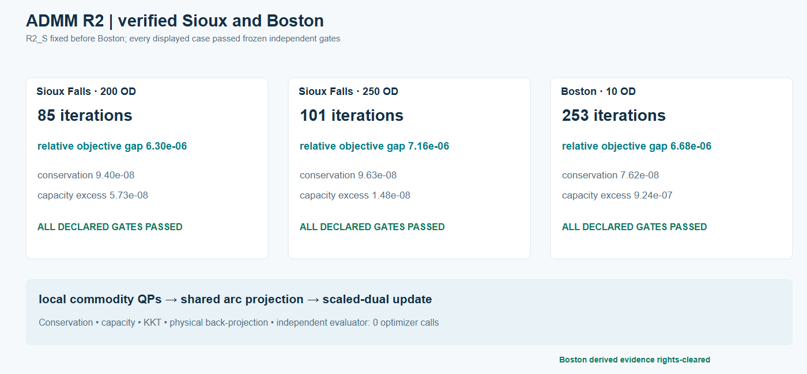

Capability coverage and evidence scope
Each cell names executed saved evidence at its actual scale, not universal software capability or empirical validation. A supplied vehicle OD can enter static assignment without a demographic or four-stage build. Static BPR/Beckmann and finite fixed-cost hard-capacity objectives belong to different model branches.
| Capability / evidence | Boston | Sioux Falls | Hong Kong |
|---|---|---|---|
| GMNS network, hierarchy and access | Accepted bounded H3 hierarchy, source-ID round-trip and nonphysical access | Classic benchmark topology and supplied OD; not a present-day H3 city dataset | Accepted bounded Tsim Sha Tsui–Jordan physical network, 95 fine/10 parent zones, turn-aware access |
| Population, households and activity | ACS 2024 five-year block-group → H3 allocation; separate MassGIS attraction proxy | Not estimated; benchmark vehicle OD is supplied | 2021 census SSG allocation; separate building-name/storey activity proxy, not measured jobs/GFA |
| Four-stage scenario | Limited household-rate, activity, gravity/IPF and conditional choice branches | Not estimated from population | Transferred TCS rates, gravity/IPF and GTFS/fare/walk sensitivity choice over 8,930 directed interzonal ODs; not locally calibrated |
| GPS / transit / detector context | Exploratory network linkage and default-off service feedback | No classic-benchmark observation layer | GTFS and pedestrian costs; detector snapshot, ATC and private reference trace are descriptive/topology evidence, not held-out traffic validation |
| Static Frank–Wolfe | Accepted small controls and three expanded tiers, up to 17,522 loaded node ODs | Historical static benchmark with retained input-identity caveat | Accepted turn-aware one-hour modeled 723.191 PCE scenario |
TAPLab + official tap-b Algorithm B |
B0/B1 accepted through task-local lossless TAPLab-compatible adapter; stock converter contract-blocked before solve | Classic Sioux accepted with official TAPLab registered-adapter parity | Accepted static result through task-local lossless TAPLab-compatible adapter; no official registered-adapter parity claimed |
| Finite full-path / Diagnostic L3 | Solved 26-OD/130-path control; accepted rank-26/52 numerical controls; expanded tiers resource-gated | Rank-50 numerical candidates; full-network gaps 8.17% / 4.38%, not exact UE | Not demonstrated |
| Finite arc-flow LP | Bounded 10-OD reference on 90 physical nodes/125 links | Selected 200/250-OD references | Accepted 10-OD reference on 11,954 dynamic nodes/24,910 arcs |
| Two-phase column generation | Accepted bounded 10-OD same-graph LP agreement and independent full-DAG pricing closure 10/10 | Historical 200/250-OD own-LP agreement; independent pricing closure not established for retained runs | Accepted current R5: Phase I zero in 12 rounds, same-graph LP agreement and independent full-DAG pricing closure 10/10 |
| Lagrangian decomposition | Separate feasible recovery; frozen 1% gap gate missed at 1.1002% | Accepted R2: feasible recoveries, 0.0746% / 0.3177% gaps | Accepted bounded transfer: separate feasible recovery and 0.7444% certified gap |
| Finite space–time ADMM R2 | Accepted bounded 10-OD holdout; 253 iterations and 6.68e-6 own-LP relative gap | Accepted 200/250 selected-OD R2_S, 85/101 iterations, 6.30e-6 / 7.16e-6 own-LP gaps | Frozen R2 transfer gated at first original-unit local conservation test; no accepted objective |
Reading the matrix
The Boston all-tier FW, 26-OD compression control, B1 Algorithm B holdout and 10-OD finite space–time CG/ADMM experiments are different branches or instances. Sioux static and time-expanded objectives differ. Hong Kong's current full-stack case supersedes only the old R1 pre-assignment pilot gate; the R1 files remain as historical source/data evidence. Hong Kong's accepted CG R5 result does not accept its separate gated ADMM R2 transfer.
Boston · Sioux Falls · Hong Kong current case · Hong Kong evidence contract · ADMM R2 · Algorithm B adapter distinction · Generic input commands.
Detailed coverage and comparable statistics from the post-correction release
The following source-aligned tables retain the two distinct old coverage views and all three metric-row tables. The first matrix is a navigational status view; the second records bounded method-specific scope. They supplement, rather than replace, the compact landing table above.
02 / Cross-city coverage matrix
Status refers to each linked bounded or historical case, not a universal method guarantee. Sioux Falls has no demographic/transit/GPS city-data build; Hong Kong ADMM remains gated. Source record.

Selected Sioux 200/250 OD and Boston ten-OD finite LP comparisons; Hong Kong ADMM is gated. Method-specific figures and gates.
Capability scope and method-specific boundaries
The entries distinguish available code, executed case evidence, and the scale at which a method was actually accepted. A missing result is not a claim that the method can never run on that city. A tiny generic fixture does not certify a large Boston solve.
| Capability / evidence | Boston | Sioux Falls | Hong Kong bounded case |
|---|---|---|---|
| GMNS network, zones and access | Demonstrated: H3 hierarchy, centroid/access and source-ID round-trip | Benchmark network: supplied topology and demand; not a present-day H3 city dataset | Demonstrated, bounded: 780 physical nodes, 1,239 links, 95 SSG/10 STPUG zones and 190 nonphysical connectors |
| Population, households and activity preparation | Demonstrated, limited: source-backed ACS block-group → H3 aggregate allocation; separate MassGIS attraction proxy | Not estimated: classic benchmark supplies vehicle OD without a demographic build | Demonstrated, limited: 2021 census SSG area allocation; building activity proxy separate from households |
| Trip generation / distribution | Demonstrated, limited: transferred household rates, activity prior, gravity/IPF and PA-to-OD | Not estimated: given benchmark OD | Engineering scenario: transferred TCS rates, local-capture sensitivity and gravity/IPF over 8,930 directed interzonal ODs |
| Mode choice | Demonstrated, conditional: regional-share feedback and absolute DA/S2/S3/TW research branch | Not modeled: fixed vehicle demand | Engineering scenario: GTFS/fare/walk generalized costs and sensitivity logit, not locally calibrated |
| GPS / service evidence | Demonstrated, exploratory: network linkage and default-off interval feedback; no independent AM validation | Not included in the classic benchmark | Linked layers: 183 GTFS stops, 294 routes and 50 detector lane observations; UrbanNav points private |
| Static Frank–Wolfe | Demonstrated: small controls and three expanded tiers, up to 17,522 loaded node ODs | Demonstrated: historical static benchmark; input-identity caveat retained | Accepted turn-aware one-hour scenario: 723.191 PCE modeled load |
| Finite full-path reference | Solved: 26-OD / 130-path control; resource-gated at expanded tiers | No equivalent solved full-path reference claimed by these supplied records | Not demonstrated for static assignment |
| Native Diagnostic L3 / compression | Accepted numerical controls: ranks 26/52; not solved at expanded tiers | Executed numerical candidates: rank 50; full-network gaps 8.17% / 4.38%, not exact UE | Not demonstrated |
| Space–time CG | Accepted bounded pilot: 90 nodes / 125 links / 10 ODs; same-graph LP match and independent 10/10 pricing closure | Historical 200 / 250 OD: feasible and own-LP matched; independent pricing closure not established | Accepted R5 bounded 10-OD case: same-graph LP match, Phase I zero in 12 rounds, independent 10/10 pricing closure |
| Lagrangian capacity pricing | Gated transfer: feasible recovery but 1.1002% gap missed frozen 1% gate | Accepted R2: 200/250 OD separately feasible; duality gaps 0.0746% / 0.3177% | Accepted bounded transfer: separate feasible recovery and 0.7444% certified gap |
| ADMM shared-capacity decomposition | Accepted R2_S bounded holdout: 10 ODs, 253 iterations, 6.68e-6 own-LP relative gap | Accepted R2_S selected subsets: 200/250 OD, 85/101 iterations, 6.30e-6 / 7.16e-6 own-LP gaps | Gated R2 transfer: first local conservation test failed; no accepted objective |
Official tap-b Algorithm B static UE |
Accepted B0/B1 through task-local lossless adapter; official converter blocked before solve | Accepted classic benchmark; official TAPLab adapter parity and verification pass | Accepted static result through task-local lossless TAPLab-compatible adapter |
| Saved checks and visualization | GMNS tracing, static original-space checks, full bounded CG figure family | Static/CG records plus accepted bounded Lagrangian/ADMM views | Source/rights register, full-stack static/four-stage figures and R5 CG traces, closure and physical-flow projection |
Capability definitions and evidence pointers. The earlier Hong Kong R1 data pilot remains a historical checkpoint; the current R2–R5 bounded technical case has accepted static and CG evidence under its explicit engineering assumptions.
03 / Comparable statistics
These are instance-level descriptions, not a cross-city objective leaderboard. The stable machine-readable CSV retains schema fields; the tables here present metric rows for reading.
A. City-data and GMNS statistics
| Metric | Boston · city-data case | Sioux Falls · benchmark | Hong Kong · bounded city case |
|---|---|---|---|
| Directed physical roads | 2852 nodes / 5091 links | 24 nodes / 76 links | 780 nodes / 1239 links |
| Fine / parent zones | 177 / 9 | Not part of this benchmark / Not part of this benchmark | 95 / 10 |
| Centroids / nonphysical access | 177 / 354 | Not part of this benchmark / Not part of this benchmark | 95 / 190 |
| Transit service layer | 3,553 referenced stops / 112 routes (dated GTFS slice) | Not part of this benchmark | 183 stops / 294 routes (pilot service layer) |
| Observation evidence | 581 GPS path-link associations; 56 planned-shape links | Not part of this benchmark | 50 detector lane snapshot records; UrbanNav point data private |
| Evidence grade | Verified bounded case; not a calibrated citywide forecast | Verified static topology; historical selected-OD finite cases are separate | Verified bounded case; activity and demand use graded assumptions |
Observation counts have different meanings and are not pooled. Sioux is a supplied-demand benchmark, not a demographic or GPS build.
Machine-readable CSV · Readable-table source record.
B. Static-assignment statistics
| Metric | Boston B1 · conditional 2 h | Sioux Falls · classic 528 OD | Hong Kong · bounded 1 h |
|---|---|---|---|
| Physical-node / positive OD pairs | 453 | 528 | 8930 |
| Assigned demand and period | 1936.238475 PCE / 2 h | 360600 vehicles | 723.191228 PCE / 1 h |
| Mathematical problem | static BPR / Beckmann | static BPR / Beckmann | turn-aware static BPR / Beckmann |
| FW evidence | Verified bounded case | Verified historical run; input-identity caveat | Verified bounded case |
| Algorithm B route | Verified bounded case; task-local TAPLab-compatible lossless adapter | Verified; official TAPLab registered-adapter parity | Verified bounded case; task-local lossless adapter |
| Objective and independent gap | Beckmann 7922.083942188 PCE-min; independent relative gap -2.3e-16 | Beckmann 4231335.287110682 vehicle-min; independent relative gap 4.5e-09 | Beckmann 1676.012131329 PCE-min; independent relative gap 4.21e-15 |
| Path-to-link reconstruction | Verified; max path/link mismatch 5.68e-14 PCE | Verified; max path/link mismatch 5.46e-11 vehicles | Verified; max path/link mismatch 1.42e-13 PCE |
Boston B1 is a matched-method holdout, not Boston's largest accepted FW tier. Objectives and demands are not comparable across cities or with finite fixed-cost models.
Machine-readable CSV · Readable-table source record.
C. Finite time-expanded statistics
| Metric | Boston · 10 OD | Sioux · 200 OD | Sioux · 250 OD | Hong Kong · 10 OD |
|---|---|---|---|---|
| Selected physical subnetwork | 90 nodes / 125 links | 24 nodes / 64 links | 24 nodes / 69 links | 100 nodes / 111 links |
| Selected OD demands | 10 | 200 | 250 | 10 |
| One model time step | 3 s | seconds not reported | seconds not reported | 30 s |
| Number of model steps | 100 | not reported in public summary | not reported in public summary | 50 |
| Elapsed model horizon | 300 s | not derivable from released summary | not derivable from released summary | 1,500 s |
| Dynamic graph | 9,110 nodes / 22,217 arcs | 1,192 nodes / 9,406 arcs | 1,292 nodes / 11,254 arcs | 11,954 nodes / 24,910 arcs |
| Same-graph reference LP objective | 64.396861511530 | 943,155.589771 | 1,521,090.83662 | 75.036329857948 |
| CG Phase-I zero round | 90 | 51 | 62 | 12 |
| Final CG column pool | 167 | 446 | 567 | 25 |
| CG independent full-DAG pricing | Independent pricing closure established; 10/10 | Not established | Not established | Independent pricing closure established; 10/10 |
| Lagrangian status / gap | Gated; 1.1002% exceeds frozen 1% gate | Accepted; 0.0746% duality gap | Accepted; 0.3177% duality gap | Verified bounded case; 0.7444% duality gap |
| ADMM status / own-LP difference | Verified bounded case; R2_S own-LP gap 6.68e−6 | Accepted R2_S; 6.30e−6 | Accepted R2_S; 7.16e−6 | Gated; first local conservation residual 0.082467622 PCE |
Fixed-cost, hard-capacity finite problems; each column is a separate graph. Objective values are vehicle-minutes, but no cross-city ranking is implied. CG pricing closure does not transfer to Lagrangian or ADMM.